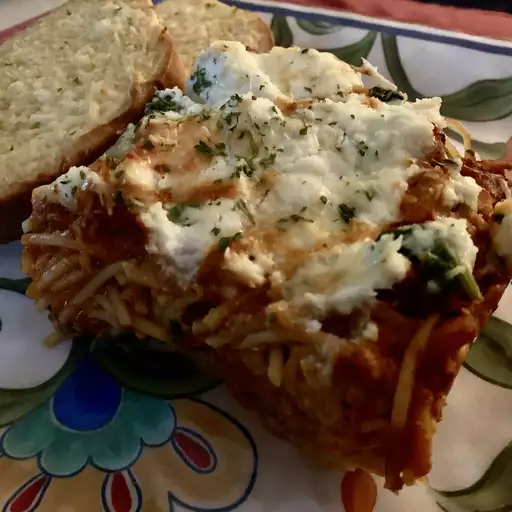

Spaghetti, just like mom used to make.
A classic dish that is simple, cheap to make, and cherished by many.
Ingredients
- 1 small onion (chopped)
- 1 bell pepper (chopped)
- 2 tablespoons garlic powder
- 3 tablespoons butter
- 1 teaspoon salt
- 1 teaspoon pepper
- 2 (15 oz) cans tomato sauce
- 1 (16 oz) box spaghetti noodles
- 1-1 1/2 lb of hamburger meat
Directions
- Step 1
On medium heat melt the butter and sautee the onion and bell peppers.
- Step 2
Add the hamburger meat and cook until meat is well done. Drain.
- Step 3
Add the tomato sauce, salt, pepper and garlic powder.
- Step 4
Salt, pepper and garlic powder can be adjusted to your own tastes.
- Step 5
Cook noodles as directed.
- Step 6
Mix the sauce and noodles if you like, I keep them separated.
Go back